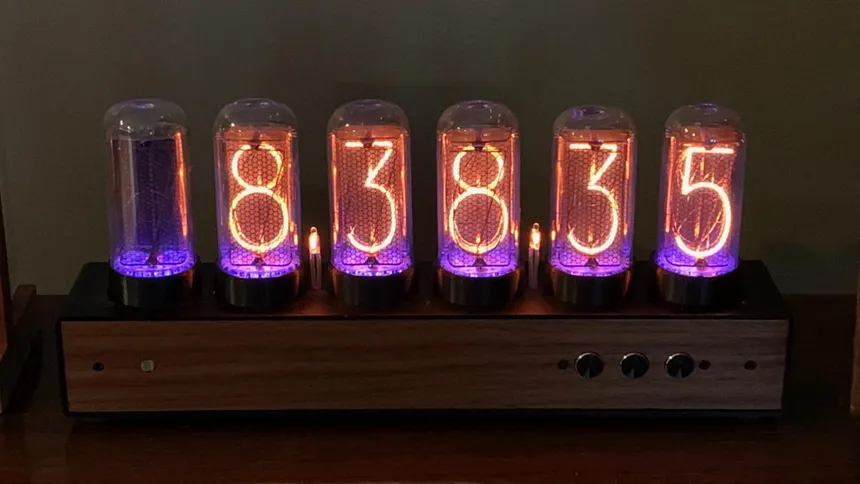

I LOVE NIXIE TUBES!
<<<<<<< HEAD

picture taken from here
Nixie Tubes are a lighting type, used to make displays, typically used for numbers / letters. They were kind of the predecessor to LED / LCD / etc. 7-seg displays, but were phased out pretty quickly due to their high voltage requirements (160V!!!), bulkiness and inefficiency (LEDs and other technologies are much better in these regards). They are pretty similar to modern neon lights and give off a similar glow, which makes them aesthetically pleasing.
I really like early electronic devices because of rather than in spite of their bulkiness and inefficiency. Sometimes it's hard to realize just how advanced our technology is nowadays just because it is so ruthlessly efficient. But if you look at an extremely old, room-sized computer and realize how revolutionary and insane that technology was, it really puts it into perspective that all of us, any person viewing this webpage, owns a personal machine several orders of magnitudes faster and several orders of magnitude cheaper and smaller than that. And that process only took a bit more than half a century, which is nothing in the grand scheme of things.
Nixie tubes are kind of like that for me. We take modern seven-segment LED displays, computer screens, and everything inbetween for granted, but there's an alternative timeline where that sort of technology just doesn't progress like it did in ours.
Unlike anything we see nowadays, nixies have a prominent glow and have "cloudy" and barred images. The glass chamber tube also probably adds to the mystique, as well as of course, their rarity. I wish I could own one, but I unfortunately don't feel like selling a kidney.
Anyway, I'm glad that they live on through media even if they see no practical use anymore (justifiably so). Notably, sections of Portal 2 and Steins;Gate use them. I've decided to incorporate their aesthetic into this site too.
Edit 17/11/2026
I felt it necessary to extend a little bit on this section.
I really like analog (or in general, older and more scuffed) technology in general. Analog technology is harder to work with, harder to get right. There's a lot more engineering and creativity involved in getting
that stuff to work, and I find it fascinating. Consider floppy disks or hard drives-- there's a lot of physics behind them. I was shocked learning that the way data is read and written
(early on, at least) came from electromagnetic induction from the magnetized bits on the disk causing a current. Compare that to a SSD (flash memory), and it's surprisingly
brain-dead. There's still a lot of engineering behind it, but it is comparatively a lot simpler... and better. This kind of thing we lose a lot as technology progresses (for the better),
but I can't help but admire cool ♥♥♥♥, even if it actually sucks and is bad.
I was also thinking earlier today: If my processor was one thousandth the speed, with one thousandth the RAM, it would still be incomprehensibly fast and data-dense.
It wouldn't be capable of opening an mp4 file, but whatever. People did a lot with much less-- don't forget that 32MB means 256 million bits. A million is a
♥♥♥♥-ton by itself, 256 times that is many ♥♥♥♥-tons. And never forget that this incredible technology, people can just buy.
Since posting this originally, I played SIGNALIS and I
♥♥♥♥♥♥♥ love the game's aesthetic. I came across the term "cassette futurism", and while that
doesn't completely correctly describe SIGNALIS, it's nice to know a similar word to describe it.
I like that kind of aesthetic.
I really like early electronic devices because of rather than in spite of their bulkiness and inefficiency. Sometimes it's hard to realize just how advanced our technology is nowadays just because it is so ruthlessly efficient. But if you look at an extremely old, room-sized computer and realize how revolutionary and insane that technology was, it really puts it into perspective that all of us, any person viewing this webpage, owns a personal machine several orders of magnitudes faster and several orders of magnitude cheaper and smaller than that. And that process only took like three decades or so, which is nothing in the grand scheme of things.
Nixie tubes are kind of like that for me. We take modern seven-segment displays and computer screens for granted, but there's an alternative timeline where that sort of technology just doesn't exist or isn't practical for consumers. Unlike anything we see nowadays, nixies have a prominent glow and have "cloudy" and barred images. The glass chamber also probably adds to the mystique, as well as of course, their rarity.
Anyway, I'm glad that they live on through media even if they see no practical use anymore (justifiably so). Notably, sections of Portal 2 and Steins;Gate use them. I've decided to incorporate their asthetic into this site too. >>>>>>> 862767e9b404f98b2c4c217ee424230217e5d39e